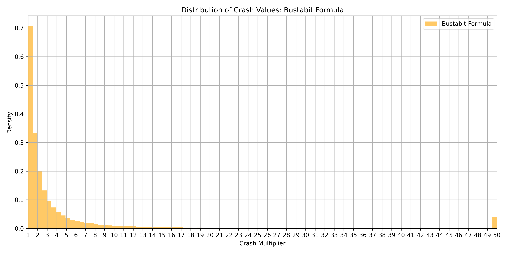

🔠Features
🔐 Authentication
BTCGambler provides a secure and seamless authentication system with support for:
OAuth login via Google, Facebook, or Github
Email-based registration with background loading screen
Email verification for user to be activated
Username based login
Two-Factor Authentication (2FA) for enhanced security (optional)
Email-based password reset
🎮 How It Works
- The game starts at a 1.00x multiplier.
- The multiplier increases in real time.
- A randomly determined "crash point" is hidden from the user.
- If the user cashes out before the crash, they win their bet multiplied by the current multiplier.
- If they wait too long, the game crashes and they lose their bet.
Gameplay Demo
👤 Guest User Functionality
BTCGambler supports guest login for users who wish to explore without creating an account:
- Guests can interact with the crash game temporarily, without registration
- All guest-related data (e.g. bets, chat messages) is deleted upon logout or session expiration
- Guests cannot access the Bitcoin faucet, make deposits/withdrawals, or edit profiles
- Automatic cleanup — The system ensures full cleanup of guest activity to maintain a clean state
ğŸ Main Application View
After logging in, users land on the game dashboard — a real-time interface for placing bets and chatting with others.
Sleek dark-blue theme mode enabled by default, with an optional ultra dark mode for visual flexibility
Main chart with gameplay and betting form
Switch between FAKE currency and BTC
🎮 Betting Interface
The Betting Interface allows users to seamlessly participate in each round with a real-time, responsive experience. It’s designed for clarity, speed, and visual feedback—helping players make quick, informed decisions.
Key features include:
- Interactive interface to place and pull bets during live rounds
- Real-time display of active bets with instant outcome updates
- Visual feedback for wins and losses as they happen
- Dynamic history bar showcasing recent betting activity
- Color-coded multipliers for enhanced visual clarity and user experience
Betting Interface Demo
📊 Bet Tracking
The All Bets page provides a comprehensive, timestamped log of all wagers placed across the platform. This feature enables users to monitor historical activity, analyze betting behavior, and ensure transparency.
Key features include:
- A sortable, tabular view of all recorded bets
- Filtering by username for targeted analysis
- Sorting options by bet amount, multiplier, winnings, and timestamp
- Display of seed hashes for each bet to support provable fairness verification
All Bets Page
🔐 Provable Fairness
Provable Fairness is a cryptographic guarantee that ensures every crash result on the platform is unbiased and tamper-proof. This system allows users to independently verify that the outcome of each round was generated fairly—without any manipulation from the server or client.
Key features of our implementation:
- Every round is determined using a combination of Server Seed, Client Seed, and Nonce, hashed using HMAC-SHA256
- A Server Seed Hash is published before the round starts, locking in the outcome
- After the round ends, the Server Seed is revealed, allowing users to verify the crash point
- A built-in Crash Point Verifier lets users input the seeds and nonce to validate results themselves
- All rounds are stored and visible in the Provably Fair audit log for full transparency
- The fairness logic is open and documented—every player can inspect how crash points are calculated
Together, these features ensure that trust is not assumed—it’s provable.
Provable Fairness
Distribution of Multipliers Over 10000 Iterations

🪙 Bitcoin Integration
To introduce realism and technical depth, the platform includes native Bitcoin-based betting functionality, simulating a real blockchain environment while preserving a seamless user experience.
Key features include:
- User-associated Bitcoin wallets for managing in-game funds
- Ability to send BTC between users via unique wallet addresses
- Transaction queuing and batching to simulate fee-efficient network behavior
- Full transaction history with support for sorting, and auditability
- Designed to mirror real-world blockchain dynamics within a controlled environment